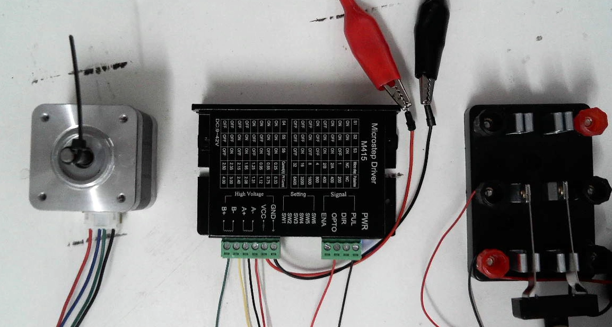
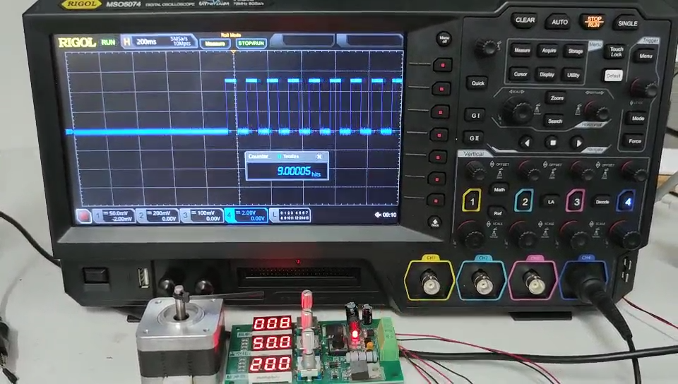

步进原理
步进电机是整个数控系统的基石，只有理解它，才能完全明白你的机器是如何运行的，
常见的 42 步进电机，有 4 根接线A+A-B+B-。实际上每一对接线对应一个通电线圈，如下所示：
我们知道，通电的线圈相当于一块吸铁石。
在步进电机的内部，排列着一对对的磁铁。如下图所示：
1、当A线圈通电时，产生一个电磁铁A，电机旋转到A位置。
2、断开A线圈，电磁铁A消失。同时接通B线圈，产生电磁铁B。
3、由于惯性，电机旋转到B位置。
4、不断通断AB线圈的电流，就能让电机旋转到指定的位置。
-
下面我们通过电池和开关，来模拟这个现象：
A线圈接通
B线圈接通
通过开关电源，控制步进电机运动：
步进电机驱动器
通过机械的方式，需要4个电源和开关，来切换线圈电流的方向。不仅设备复杂，而且操作麻烦，于是人们发明了步进电机驱动器。它内部使用电子开关，来替代4个机械开关和电源，这样就可以使用1个电源+1个开关来驱动步进电机了。
-
下图是雷塞M420D的步进电机驱动器：
1、绿框显示动力电源的接线，接入24V直流电源，输出24V控制步进电机转动。。
2、红框显示了控制信号的接线。例如，在时间T=0到1毫秒时，给1个5V的电压；在T=1到2毫秒时，不给电压。驱动器接受到4个这样的信号，就通过电子开关，开关A+A-B+B-电源各一次，输出给步进电机，于是步进电机就转动4个步。
3、速度控制：上例，2毫秒开关一次电源，每秒就开关了500次，电机的旋转速度就是2.5圈/秒。如果想让电机转动的快点，就加快电源开关的速度，例如1毫秒开关一次，就能让电机的旋转速度提高到5圈/秒。
4、方向控制：同样，利用5V信号，也可以控制电机的正反转。
-
下面，我们通过一个开关来驱动步进电机，开关每闭合一次，前进一个步进角。
开关按下，走了一步。

开关电路的电压变换图：。
使用开关控制步进电机驱动器：
电子开关
每一次开关电源，步进电机旋转1.8步，旋转一圈需要开关200次。在实际使用中，步进电机每秒旋转5圈，就需要在1秒内，开关1000次电源。
显然不可能通过机械的方式来实现，驱动器都可以使用电子开关来驱动步进电机，控制板一样可以通过电压信号来控制步进电机驱动器。下图就是一个电子开关，我们设置为：
1、频率：每秒开关8次
2、脉冲数：一共开关200次
下图就是开关对应的电压信号，控制步进驱动器指挥电机旋转。

CNC硬件控制板
谁来给步进电机驱动器，发送控制信号呢？
它就是CNC的大脑——硬件控制板，通常具有如下主要功能：
1、通过电压信号，控制3个步进电机驱动器，间接指挥步进电机的旋转定位
2、接受控制软件指令，把”X轴移动10mm”高级指令，转换为电压控制信号输出给步进电机驱动器
3、与控制软件通信，反馈硬件设备当前运行的状态信息。同时响应软件控制
-
下图示意了蓝天科苑Mach3控制板，与步进驱动器的接线，它接受来自USB的指令，控制XYZ三个方向的步进电机运动。
下图是使用控制板，驱动X轴电机的接线图：
执行G0 X100指令时，控制板输出的电压开关信号：
CNC控制软件
连接上Mach3软件
在输入框中输入：G0 X10
Mach3就会把这条指令，通过USB发送给CNC硬件控制板。
CNC硬件控制板解析这条指令，换算成电压信号输出给步进电机驱动器，从而最终控制雕刻机的运行。
例如：下面我们设置1个脉冲走1毫米，1秒走10个脉冲。
设置步进驱动器200个脉冲旋转一圈，G0 X200刚好运动一圈，下图是运动时的截图。